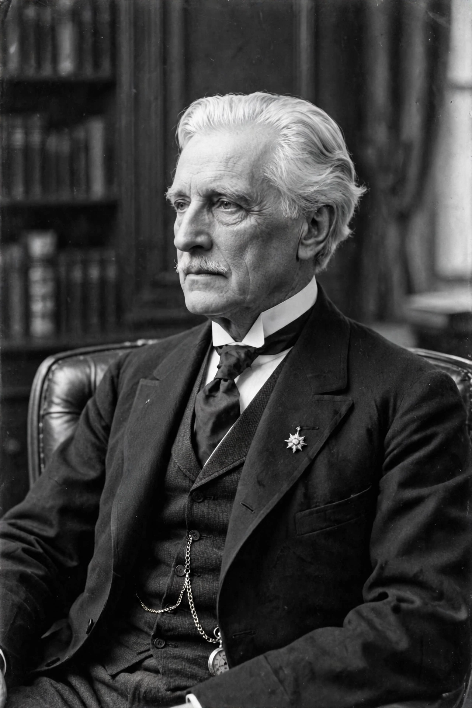

H. H. Asquith

Herbert Henry Asquith, 1st Earl of Oxford and Asquith (12 September 1852 – 15 February 1928), was a British statesman and Liberal politician who served as Prime Minister of the United Kingdom from 1908 to 1916. He was the last Liberal prime minister to command a majority government, and led Britain through major social reforms and into the First World War before being displaced by David Lloyd George.
| Prime Minister | 5 April 1908 – 5 December 1916 |
|---|---|
| Monarch | Edward VII; George V |
| Preceded by | Henry Campbell-Bannerman |
| Succeeded by | David Lloyd George |
| Born | 12 September 1852, Morley, Yorkshire |
| Died | 15 February 1928, Sutton Courtenay, Berkshire |
| Party | Liberal |
| Education | Balliol College, Oxford |
Early life and career
Asquith was born in Morley, Yorkshire, the son of a wool merchant. He won a scholarship to Balliol College, Oxford, took a first in classics, and became a successful barrister. Elected MP for East Fife in 1886, he became Home Secretary under Gladstone and Rosebery (1892–1895), and returned to office in 1905 as Chancellor of the Exchequer under Campbell-Bannerman, introducing old-age pensions groundwork and progressive taxation. He succeeded as prime minister in April 1908.
Premiership
Asquith's governments passed landmark social legislation: old-age pensions (1908), labour exchanges, and the National Insurance Act 1911 providing health and unemployment insurance. When the House of Lords rejected Lloyd George's "People's Budget" of 1909, two elections in 1910 and the threat that George V would create hundreds of Liberal peers produced the Parliament Act 1911, which removed the Lords' veto over money bills and reduced its delaying power to two years. His government also faced the Irish Home Rule crisis, militant suffragette campaigning, and labour unrest.
On 4 August 1914 Britain declared war on Germany. Asquith's wartime leadership was criticised as lethargic ("wait and see"), especially after the Shell Crisis and the Gallipoli failure of 1915 forced him into coalition with the Conservatives. The Easter Rising of 1916 and the Somme deepened disillusion. In December 1916 Lloyd George, backed by Conservative leader Bonar Law, manoeuvred him out; Asquith resigned on 5 December.
Later life
Asquith led the independent Liberal faction against Lloyd George's coalition Liberals, splitting the party with long-term consequences. He lost his seat in 1918, returned for Paisley in 1920, lost again in 1924, and accepted a peerage as Earl of Oxford and Asquith in 1925. He died in 1928 at Sutton Courtenay. His second wife, Margot Asquith, was a noted diarist, and his children included the poet Herbert Asquith and the film director Anthony Asquith.